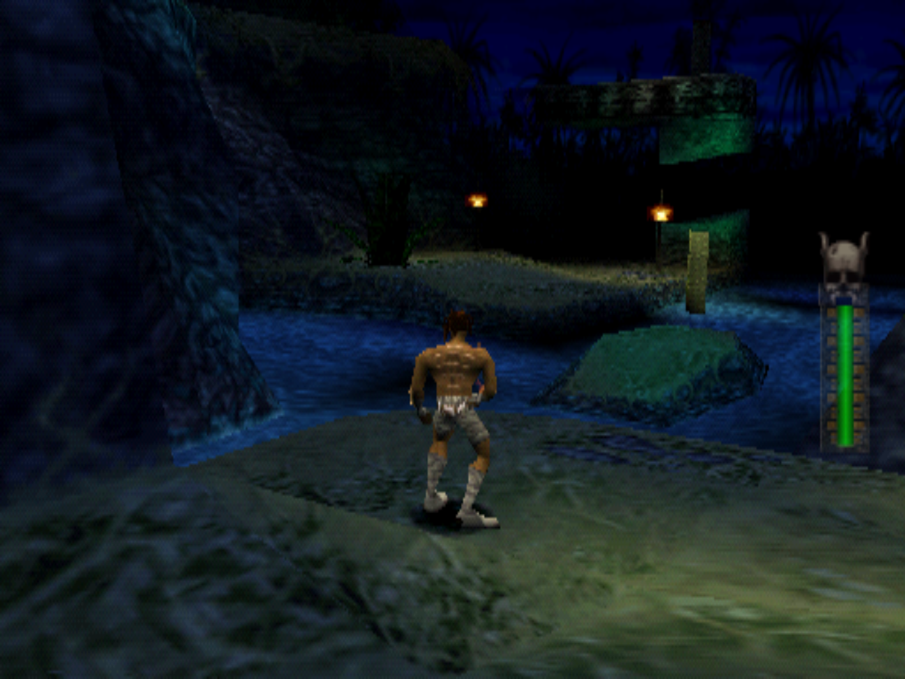
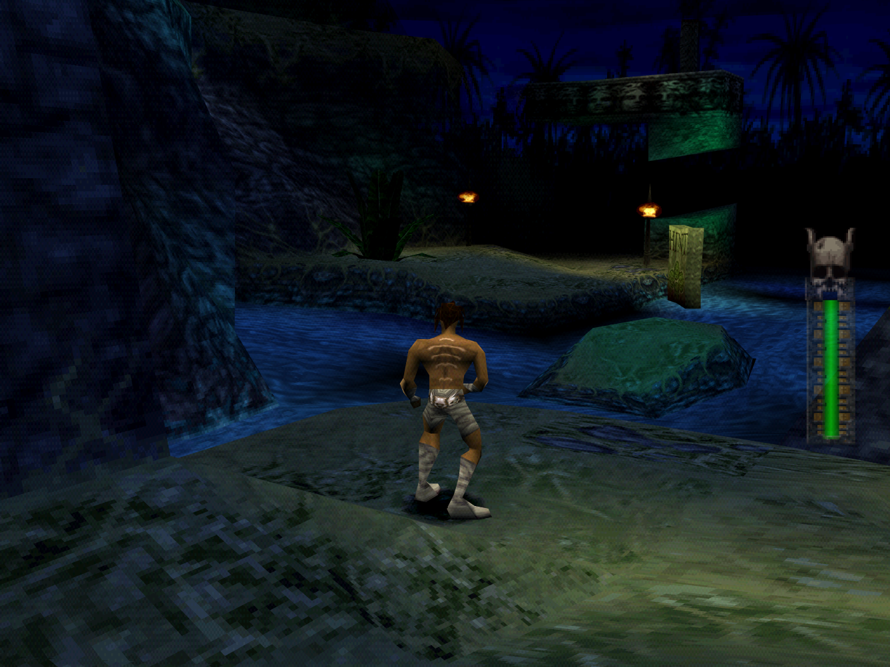

Akuji the Heartless Recompiled
Experience the 1998 PlayStation 3D action-adventure classic recompiled natively for 64-bit Windows. Enjoy high resolutions, sub-pixel polygon stability, perspective texturing, and decoupled presentation pacing while preserving authentic gameplay logic.
Important Legal & Preservation Notice
This project is a standalone fan-made recompiler that requires your own legally obtained Akuji the Heartless (USA) game disc. No copyrighted game assets, ROMs, audio tracks, or proprietary retail BIOS files are distributed with this software.
Visual Comparison: Original vs Enhanced
Switch seamlessly between the raw pixelated nostalgia of the 1998 original and enhanced modern rendering with one click.

Original PS1
Authentic 240p internal rendering, nearest-neighbor unblurred textures, native 4:3 aspect ratio, and classic PS1 polygon wobble.

Enhanced PC
Crisp 1080p+ rendering with PGXP sub-pixel vertex precision, perspective-correct texture mapping, and supersampling.
Engine Highlights
Native x86-64 Execution
MIPS binary instructions are statically translated to native C and compiled directly for your CPU. Zero emulation overhead or JIT stutter.
Arbitrary Resolutions
Render at native 1080p, 1440p, or 4K with clean windowed, borderless, or exclusive fullscreen display modes.
PGXP Sub-Pixel Precision
Eliminates the characteristic PlayStation polygon jitter and affine texture warping for a stable, modern 3D camera experience.
Presentation Decoupling
Interpolates presentation frames up to 60, 120, 144, 240 FPS or your monitor's native refresh rate without speeding up the fixed 30 Hz game physics.
Modern Input & Gamepads
Full support for modern controllers (XInput, DualSense, DirectInput) and customizable in-game keyboard and controller shortcuts.
Integrated OpenBIOS
Ships with the clean-room, open-source OpenBIOS (MIT). No extracted retail console BIOS dump is required to boot and play.